CONTROLLED EXPERIMENTATION · AIXI-SHAPE & TXUXI
Validating Concept Attribution Where the Answer Is Known
AIXI-Shape (plain backgrounds) and TXUXI (DTD-textured backgrounds) are synthetic benchmarks built so that the ground-truth concept driving each classifier's decision is known by construction. Any failure of TCAV or Visual-TCAV on them can therefore be attributed unambiguously to the protocol — not to the model — which is exactly what licenses the transfer of the resulting methodological commitments to the real dermatological classifier in the V-MedCAV chapter.
on plain vs. DTD-textured
128×128 canvases
01
The AIXI-Shape and TXUXI synthetic benchmarks
Each benchmark image is a 128×128 canvas containing three possible shape classes — circle, square, cross — placed on a pseudo-random 3×3 grid with stochastic size jitter. TXUXI is the stress-test variant: the same shapes superposed on Describable-Textures-Dataset (DTD) backgrounds, replacing the near-empty black canvas with a textured one whose gradient structure rivals that of the shape itself.
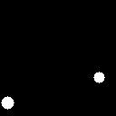
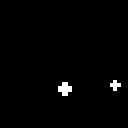
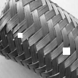
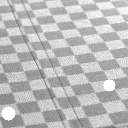
Four genuine training images, taken directly from data/aixi_shape/train/ and data/aixi_shape_texture/train/ (dades.csv rows 00000, 00017, 00016, 00000): the 3×3 stochastic grid placement and per-shape size jitter are visible on the plain canvas, while the DTD textures on the right show why TXUXI is the harder variant — the shape now has to be found against a competing gradient structure rather than a near-empty background.
train / validation images per benchmark variant, with structured dades.csv metadata and per-pixel ground-truth shape masks
concept sets in the full library — full shapes, halves, quarters, edges, corners and arms — across three hierarchical levels of spatial completeness
FlexibleTNet (figure × size) cells exceed 99% validation accuracy — so any downstream interpretability failure cannot be blamed on a deficient classifier
The classification task is posed through three binary attribution functions — circle_only, square_only, cross_only — chosen specifically because they admit unambiguous attribution correctness: only one shape constitutes evidence for the label, and the others contribute exactly zero. Each classifier in the FlexibleTNet family (a progressive complexity ladder from tiny to large, plus a full stage for cross) is a stack of Conv 3×3 + ReLU + MaxPool blocks ending in a binary sigmoid output — the sigmoid is removed before running TCAV, since it saturates the gradient on confident predictions and would otherwise mask the very signal the experiment is trying to measure.
Three families of negative reference pool are carried through the entire chapter, because — as the results below show — the choice between them turns out to be the single most consequential methodological decision in the whole pipeline: an OOD photo pool (random_pool_3+4, ≈10,000 generic RGB photographs — Kim et al.'s canonical choice), a matched-absent / concept-absent pool (aixi_no_<shape>, validation images filtered by metadata to guarantee the target shape's count is exactly zero), and a matched-blind pool (aixi_any, randomly sampled validation images with no label filter — the protocol Lucieri et al. use for dermoscopic TCAV).
02
TCAV experimentation: does the model rank concepts correctly?
The question driving this section is direct: applied to FlexibleTNet classifiers trained on AIXI-Shape, does canonical Kim-2018 TCAV assign the highest importance to the concept each classifier was actually trained to detect? Because the ground truth is known, any failure can be attributed to the protocol rather than the model. The experiment is a four-way factorial — variant (plain / texture) × random pool (photo / per-figure) × classifier (default / regularised) × concept (6, a representative full-shape and sub-shape pair per figure) — swept across every convolutional layer, and it surfaces a sequence of discovered failures, each of which motivates the next.
Pitfall 1 — Captum's DefaultClassifier produces chance-accuracy CAVs. Across all 1,320 CAVs fitted with the canonical logistic-regression default classifier, mean held-out accuracy is ≈ 0.50 — chance. The mechanism is a textbook p ≫ n regime: a 12,800-dimensional feature space fitted on roughly 150 training samples, where the classifier overfits to training noise rather than learning the concept boundary. The trap is subtle — sign-count can still look informative even from a chance-accuracy CAV, because a random unit vector projects non-trivially onto the class gradient (gradient-noise alignment, not concept signal); partial null distributions confirm that 36–68% of random-vs-random pairings saturate sign-count at exactly 0 or 1 under the canonical photo pool, leaving no statistical room for a significance test at all.
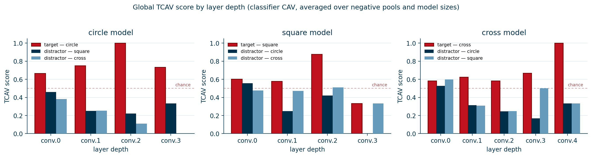
Global TCAV score by layer depth — classifier CAV, averaged over pools and model sizes
Once the classifier-CAV regime is used (the regularised one introduced in the next subsection, not the chance-level DefaultClassifier of Pitfall 1), the global picture answers the section's opening question directly: in the great majority of layers, across all three shape models, the target concept's TCAV score (red) sits clearly above both the chance line and the two distractor concepts — the model has, in fact, learned to encode the shape it was trained to detect, and TCAV can see it once the CAV itself is trustworthy.
03
From two pathologies to a new metric: the Concept Selectivity Score
Switching to an L2-regularised logistic-regression classifier (C = 0.01, liblinear, 67/33 split) fixes the chance-accuracy problem — mean held-out accuracy lifts to 0.76–0.99 depending on contrast difficulty, with 0% of CAVs below chance — but accurate CAVs expose two further pathologies that the canonical Kim et al. metrics simply cannot see through.
Target-concept reliability at the deepest layer, by CAV construction (1,320 CAVs)
Fraction of (variant × shape × size × pool × layer) cells in which the target concept's directional derivative has the correct sign (top bar of each pair) and saturates sign-count at ≥ 0.9 (bottom bar). The ordering SVM > LR > Centroid is consistent across both criteria — a trained discriminative boundary aligns more reliably with the class gradient than a difference-of-means direction, though all three recover the correct concept in a clear majority of cells once the accuracy pathology (Pitfall 1) is fixed.
Pitfall 2 — sign-count saturation
With high-accuracy CAVs, sign-count saturates at 1.000 for all six concepts simultaneously in many cells — e.g. square / large / conv_layers.3 under plain + per-figure pool, where even non-matching concepts reach sign-count = 1.000. A shared "AIXI shape present" axis dominates the directional derivative at the deepest convolutional layer; the concept-specific direction exists, but is small relative to that shared component, and a binary indicator cannot tell the two apart.
Pitfall 3 — absolute-magnitude symmetry
The canonical Kim et al. metric averages the signed directional derivative $S_{c,k,l}(\mathbf{x}) = \nabla_{\mathbf{f}_l(\mathbf{x})} h_k \cdot \mathbf{v}_c$ over the test set and takes its absolute value, $\overline{|S|}_{c,k,l}$. That absolute value is the source of the pathology: it scores a concept that consistently pushes the logit down (an anti-concept) identically to one that pushes it up. Whenever the matching concept's derivative is smaller in magnitude than an anti-concept's — exactly the regime created by the shared "shape present" axis — the absolute-magnitude ranking names the wrong concept as most important.
These two concurrent failures — a metric that is sign-blind (saturated sign-count) and a metric that is sign-symmetric (absolute magnitude) — are not handled by anything in the existing TCAV literature. This dissertation therefore introduces, as an original contribution, the Concept Selectivity Score (CSS): for class $k$ with matching concept set $M_k$ and an explicit anti-concept set $A_k$, at layer $l$,
where $\overline{S}_{c,k,l}$ is the mean signed directional derivative — magnitude-aware, and explicitly contrastive against a defined distractor set, which absorbs the shared baseline component and exposes only the concept-specific differential. Concretely, for the circle classifier, $M_{\text{circle}} = \{$circle_full, circle_half_top$\}$ and $A_{\text{circle}} = \{$cross_full, cross_arm_right, square_full, square_corner_bl$\}$ (and symmetrically for cross and square). CSS > 0 means matching concepts drive the logit upward more than distractors — genuine concept-specific encoding; CSS ≈ 0 means the layer encodes only a shared "shape present" axis without disentangling shapes; CSS < 0 means the protocol has failed or the concept is genuinely anti-aligned.

Do TCAV and Visual-TCAV agree on which concept matters? (plain AIXI-Shape, matched-absent pool, every shape and layer)
Two independently-computed importance scores — TCAV's sign-count over the logit gradient and Visual-TCAV's spatial-attribution fraction — plotted against each other for every (shape × layer × concept) cell. Target concepts (red) cluster in the "both methods: important" quadrant, distractors (blue) cluster in "both methods: unimportant", and the two scores correlate at Pearson r = 0.70 / Spearman ρ = 0.77, agreeing on 28 of 39 cells. The two protocols ask different questions of the network — "does the gradient align with this direction?" versus "where does this direction's signal live spatially?" — and arrive at compatible answers, which is the cross-validation that licenses reading them as complementary views of the same underlying concept encoding rather than two unrelated numbers.
04
The random-pool × classifier interaction — the story inverts
The most consequential methodological finding of the TCAV section is that the "best" negative reference pool is not a property of the pool alone — it depends entirely on which CAV classifier is used alongside it, and the two recommendations invert when the classifier changes. The chart below tracks one fixed, simple metric — does the highest-ranked concept match the ground truth? — across the three regimes that the experimentation passed through:
Rank-1 hit rate — does the top-ranked concept match the ground truth?
The same two pools, the same hit-rate metric, three regimes — and the "winning" pool changes twice. Under chance-accuracy CAVs the per-figure pool looks like the rescue (94% vs 24%); once the classifier is fixed on the plain variant the photo pool overtakes it (88% vs 69%); and on TXUXI's cross shape the ranking flips back toward the per-figure pool (77% vs 40%). No single row of this chart is "the answer" — together they are the evidence for the chapter's central methodological claim.
The mechanism: concept-vs-photos is a trivially separable boundary, so the resulting CAV has near-unit accuracy and aligns cleanly with the class gradient — but a concept-absent pool forces a subtler boundary, yielding a "purer" yet less gradient-aligned CAV. Under chance-accuracy CAVs, the per-figure pool's apparent advantage was a noise artefact of an unrelated failure mode; once the classifier is fixed, the photo pool turns out to be the stronger partner on the plain variant — and the advantage flips shape-by-shape on TXUXI. The methodological recommendation that follows is unavoidable: a negative-pool choice can never be reported, or trusted, in isolation from the CAV classifier it is paired with.
05
Visual-TCAV: when does the concept map land where the concept actually is?
The same factorial design — variant × shape × size × CAV method × negative pool × layer — is repeated for spatial concept maps, scored against the AIXI-Shape ground-truth masks with Spatial-AUC, Soft-IoU, IoU-AUC and Balanced-MSE. The headline: the classifier CAV localises robustly almost everywhere (mean best-layer up-mode Spatial-AUC ≈ 0.91), while the centroid CAV is fundamentally bimodal — and which mode it lands in is dictated entirely by the negative pool.
What a concept map actually looks like — circle_full, conv_layers.2, classifier CAV, large model

Four genuine evaluation cells, taken directly from the export that produces the spatial-fidelity numbers below: input image (left), the 16×16 concept map the classifier CAV produces for circle at conv_layers.2 (centre), and the ground-truth circle mask with its per-image Spatial-AUC (right, 0.78–1.00 here). This is the well-behaved end of the spectrum this section is about — the high-attribution cells (dark green) sit directly on top of the annotated circles, which is exactly what a Spatial-AUC near 1.0 looks like in practice.
Mean best-layer Spatial-AUC, by CAV method × negative-pool family (up mode)
The classifier CAV (top bar in each pair, ≈ 0.82–0.94) is stable across all three pool families — it is the safe default. The centroid CAV (bottom bar) is the one that moves: it collapses under the OOD pool (0.709, flagged here because that mean hides a 75%-below-chance tail), matches or beats the classifier under the matched-absent pool (0.924), and partially recovers but still trails under the matched-blind pool (0.711). The pool is not a side detail for the centroid method — it is the difference between failure and the best result on the page.
The numbers above are easiest to trust once you can see what a 0.227-mean / 75%-below-chance localisation actually looks like next to a 0.924 one — the pairing on the left is the single clearest illustration in the whole experimentation of "the pool sets the direction, not just its accuracy": identical image, identical CAV construction, only the negative reference pool differs, and the resulting heatmap goes from anti-correlated noise to a near-perfect outline of the shape.
Centroid collapse under the OOD pool
Paired with an out-of-distribution photo pool, the centroid CAV collapses to mean Spatial-AUC = 0.227, with 75% of cells scoring below chance — e.g. circle / small / conv_layers.0 bottoms out at 0.008–0.009, an essentially anti-correlated map. The centroid direction-of-means is dominated by whatever separates "concept" from "random photo" in raw activation space — rarely the concept's spatial signature.
Matched-absent pool: full recovery
Swap in a matched concept-absent pool and the same centroid CAV swings by +0.92, to 0.991–0.994 — statistically indistinguishable from the classifier CAV's 0.909/0.901 in the same cells. The fragility is not intrinsic to the centroid method; it is a pairing failure that the right negative pool eliminates outright.
TXUXI inverts the ranking again
On the textured TXUXI variant the centroid+matched-absent combination not only recovers but overtakes the classifier: centroid+OOD = 0.976 > classifier+OOD = 0.923. Texture changes which CAV construction is gradient-aligned — reinforcing that no single (method, pool) pairing is universally optimal.
The matched-blind ("Lucieri-style") pitfall
For the cross shape, swapping to a label-blind matched pool collapses Spatial-AUC to 0.078–0.316 (vs. ≈0.99 with matched-absent) — because cross appears in roughly 50% of the base rate of the aixi_any reference set, so "label-blind" silently becomes "concept-present-by-chance," and the contrast the CAV is supposed to encode is washed out before it is even built.
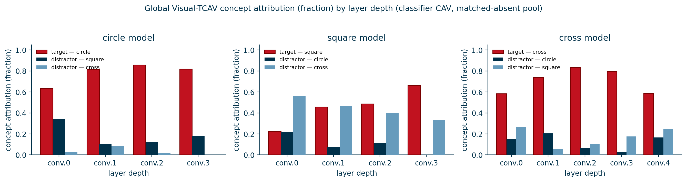
Global concept attribution by layer depth — classifier CAV, matched-absent pool
The same "does the model encode the right concept" question, now asked of Visual-TCAV's spatial attribution rather than TCAV's directional derivative: summed over the whole concept map, the target shape (red) claims an increasing share of total attribution with depth, while the two distractor shapes are squeezed toward zero — the circle and cross models reach essentially complete separation by their last layer, and even the harder square model (which shares more visual structure with its distractors) keeps the target bar on top throughout. The two methods — gradient-based TCAV above and attribution-based Visual-TCAV here — independently converge on the same conclusion.
Spatial-AUC range across the network, by depth bin (classifier CAV, up mode)
Bars show the bin midpoint; labels give the observed range. Localisation quality is non-monotonic in depth — it peaks in the middle of the network and falls off at both ends, for two different reasons.
Layer depth has a sweet spot, not a monotone trend
Across both variants, localisation quality is non-monotonic in depth: shallow layers sit at 0.60–0.85 (too little semantic abstraction to align with the concept, even though resolution is high), mid-depth layers peak at 0.96–0.99 (the sweet spot — semantically concept-aligned and spatially coarse enough to be smooth), and the deepest layers fall back to 0.85–0.93 (semantically sharper but spatially too coarse to trace a shape's boundary). The penultimate convolutional block is consistently the best single choice.
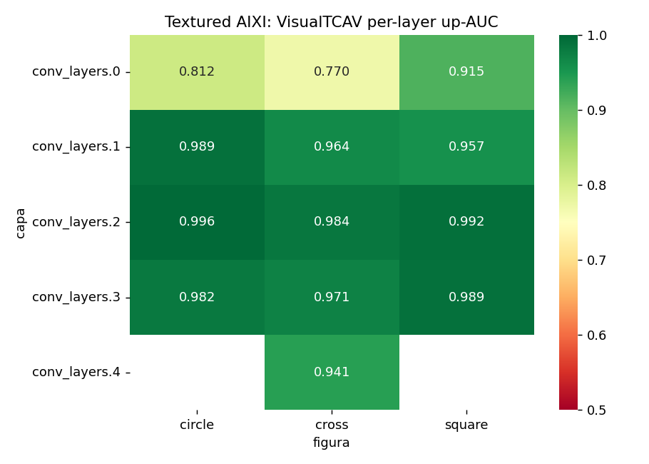
Visual-TCAV per-layer up-AUC, by figure (TXUXI, textured)
The same non-monotonic depth profile, now broken out per shape on the harder textured variant: every column dips at conv_layers.0 (0.77–0.92), peaks at conv_layers.1–3 (0.94–0.996), and the pattern is consistent for circle, cross and square alike — the "sweet spot" is a property of the network's depth structure, not an artefact of any one shape.
The GAP-vs-Flatten polarity collapse
A further probe compares CAVs trained in the network's native global-average-pooled (GAP) feature space against CAVs trained on the flattened (un-pooled) activation tensor. Pooling discards spatial information before the contrast is learned — and the cost shows up as a collapse in how cleanly the CAV separates concept-present from concept-absent activity in feature space (concept−: mean signed projection on concept-absent inputs; closer to zero / more negative is better separation):
| Variant | CAV method | GAP · concept− | Flatten · concept− |
|---|---|---|---|
| AIXI | centroid | −0.034 | +0.121 |
| AIXI | LR | −0.026 | +0.174 |
| AIXI | SVM | −0.019 | +0.366 |
| TXUXI | centroid | −0.009 | +0.059 |
| TXUXI | LR | −0.009 | +0.054 |
| TXUXI | SVM | −0.009 | +0.094 |
Every GAP cell keeps concept− negative — the CAV correctly assigns concept-absent activity a negative projection. Every Flatten cell flips the sign positive, and the magnitude of the flip grows with classifier flexibility (centroid → LR → SVM): a more powerful classifier finds more ways to overfit the high-dimensional flattened space to spurious structure, producing a CAV that is confidently wrong about which side of the boundary "concept-absent" sits on. Pooling is not a convenience; on this evidence it is what makes the contrastive direction meaningful at all.
06
How does a concept map compare to a saliency map?
AIXI's plain black canvas makes pixel-level saliency trivial — foreground pixels are, almost by definition, "the shape." That structural shortcut is exactly what TXUXI's textured DTD backgrounds remove: a saliency method now has to find the shape against competing texture, the same way Visual-TCAV has to find the concept against a competing background activation. TXUXI is therefore the fairer arena for asking how a concept map compares to a pixel-saliency map on the one ground-truth task both can be scored on: where, spatially, is the shape?
Eight methods — Visual-TCAV, Integrated Gradients, LIME, Occlusion, SmoothGrad, Guided Backprop, vanilla Saliency and Grad-CAM — were run over the same TXUXI test images and scored against the same shape masks (up-resolution mode, mean over all cells in artifacts/results/resultados_texture.csv):
Mean Spatial-AUC, up mode (TXUXI)
Mean Soft-IoU, up mode (TXUXI)
Bars are scaled within each chart (Spatial-AUC against its 0–1 range; Soft-IoU against its observed maximum, since IoU values are intrinsically small on thin-outline shapes). Visual-TCAV (highlighted) places third in both rankings — never first, never last, consistently inside the leading cluster.
The same eight-method evaluation was run on both backgrounds — plain AIXI-Shape and textured TXUXI — at each method's own best layer, which makes it possible to ask a sharper question: does the texture actually hurt, and does it hurt every method equally?
Spatial-AUC, best layer — plain vs. textured (200 images, mean)
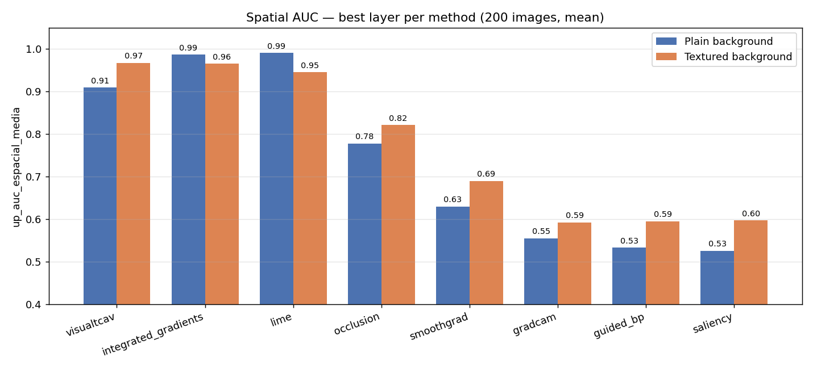
Soft-IoU, best layer — plain vs. textured
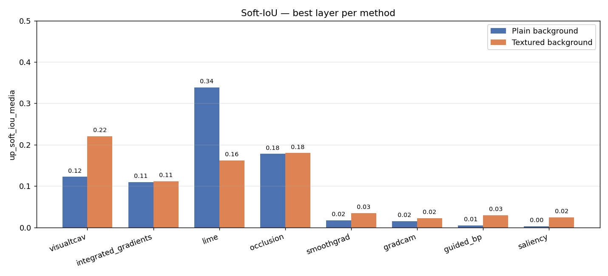
Texture is not, in general, the great equaliser one might expect: Visual-TCAV is one of only two methods (with SmoothGrad) whose Spatial-AUC improves on the textured background (0.91 → 0.97), while LIME and Integrated Gradients — its closest competitors on plain AIXI — both drop slightly. On Soft-IoU the picture is similar: Visual-TCAV gains (0.12 → 0.22) while LIME nearly halves (0.34 → 0.16). A plausible reading is that the contrastive CAV direction is partly robust to background statistics in a way that raw input-gradient methods are not — though with only 200 images per cell this is a pattern worth confirming at larger scale, not yet a settled claim.
Textured AIXI: up-AUC by method × figure
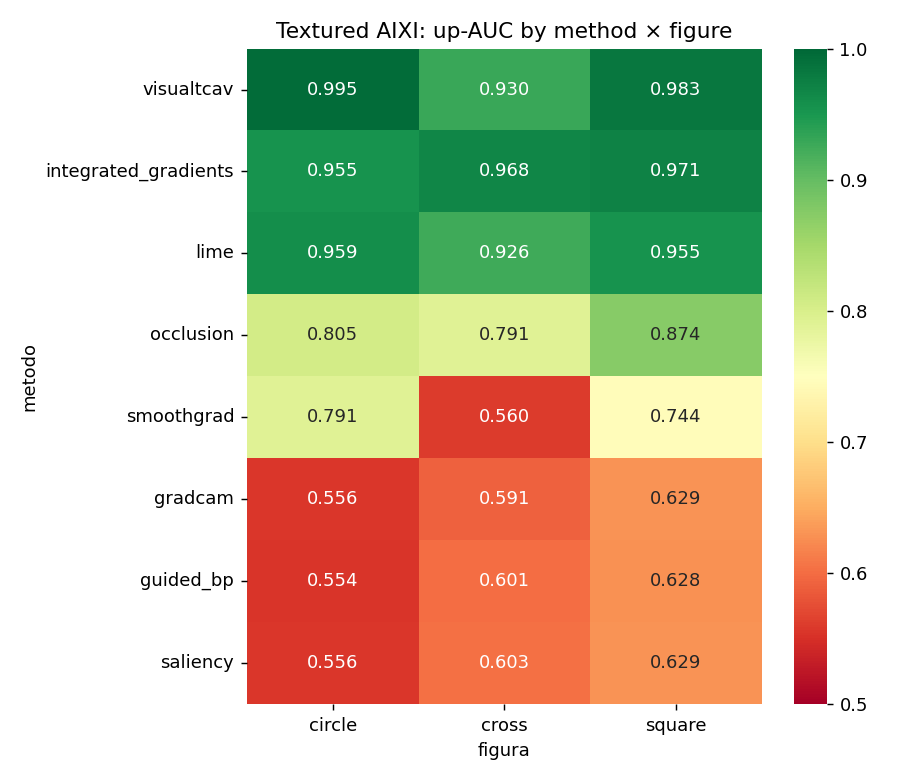
The same leading-cluster-vs-laggards split holds for every individual shape, not just on average: Visual-TCAV, Integrated Gradients and LIME (top three rows) stay at 0.93–1.00 whether the target is a circle, cross or square, while Grad-CAM, Guided Backprop and vanilla Saliency (bottom three) are stuck at 0.55–0.63 regardless of shape — the ranking is a property of the method, not of which shape happens to be easiest.
Textured AIXI: Spatial-AUC vs. model size
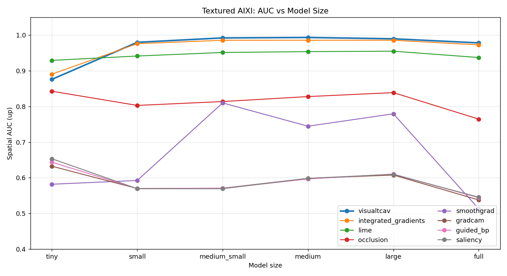
The leading cluster's advantage is not a small-model artefact: Visual-TCAV, Integrated Gradients and LIME climb together from ≈0.88 at the tiny FlexibleTNet to a stable ≈0.95–0.99 plateau from small onward, and hold that plateau all the way to the full model — the gap to the other five methods, which never clear ≈0.85, widens rather than closes as the network grows.
Qualitative comparison, circle_full · circle_medium · conv_layers.2 (TXUXI, textured)

Four held-out TXUXI test images (rows), each scored against its ground-truth circle mask (second column) by all eight methods (remaining columns) — the actual output grid behind the rankings above, taken directly from the evaluation run. Visual-TCAV's concept map (third column) lands cleanly on the annotated circle in every row, expressed in the same spatial language as the pixel-level methods beside it but carrying the human concept label "circle" rather than a bare gradient magnitude.
Qualitative comparison, cross_full · cross_medium · conv_layers.2 (TXUXI, textured)
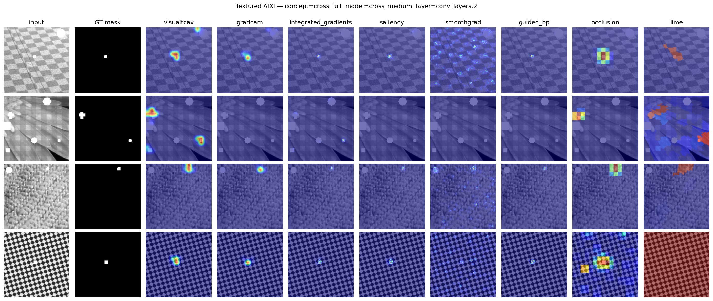
The harder of the three shapes — a thin cross is a small target against a busy weave or dot-grid texture — and the same split persists: Visual-TCAV's map converges on the annotated cross in the top rows, while the gradient-only methods (saliency, guided backprop, smoothgrad) visibly diffuse their attribution across the competing texture pattern instead.
Qualitative comparison, square_full · square_medium · conv_layers.2 (TXUXI, textured)

On square — the figure that shares the most edge structure with its distractors — the same leading trio (Visual-TCAV, Integrated Gradients, LIME) keeps its attribution concentrated on the annotated region across all four rows, the qualitative counterpart of the 0.94–0.99 cells they occupy in the method × figure heatmap above.
Read plainly, Visual-TCAV does not top either ranking — Integrated Gradients and LIME edge it out on Spatial-AUC, and Occlusion and LIME edge it out on Soft-IoU, while Grad-CAM (often assumed to be the closest pixel-level relative of a CAM-style concept map) actually scores among the lowest on both metrics. The honest reading is not "Visual-TCAV wins" but something more interesting: it lands inside the cluster of the strongest pixel-level attributions (within ~0.04 AUC and ~0.02 IoU of the best) while answering a structurally different question. A saliency map says "these pixels mattered to the logit"; Visual-TCAV's map says "this is where the human-named concept the logit relied on is located." That the two converge this closely on a benchmark where the ground truth is a single labelled shape is itself the validation result — it means the concept-level map is not paying a large spatial-fidelity cost for the much larger interpretive payoff of being expressed in concept vocabulary rather than raw pixel gradients.
NEXT
From a controlled lab to a real clinic
Every methodological lesson learned here — the regularised CAV classifier, the matched-absent negative pool, the penultimate-layer sweet spot, the GAP-space requirement, and the CSS-style contrastive reasoning — is carried forward into V-MedCAV, where the ground truth is no longer a synthetic mask but a board-certified dermoscopic vocabulary, and the model is the RECOD Inception-V4 melanoma classifier.